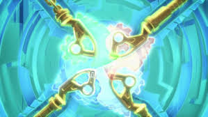

Attributes
- Able to hack into systems
- Able to purge Overlord virus from the master hard drive (because Borg hates backups I guess)
- Quantity - 4
History
The Technoblades were made by Cyrus Borg when he discovered the overlord lurking in his network in the form of a virus after his defeat at the hands of Lloyd. Borg appearently stinks at ensuring CIA while balancing FSU. When the Overlord takes full control of the system, Borg gives the ninja these weapons. Eventually, the blades are used to repoot the system which wipes the overlord virus.